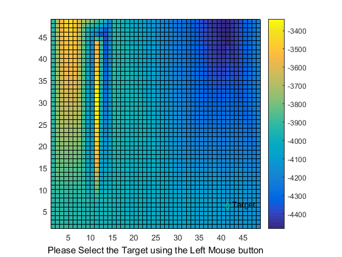
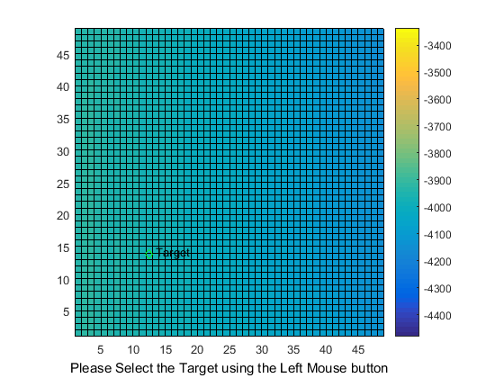
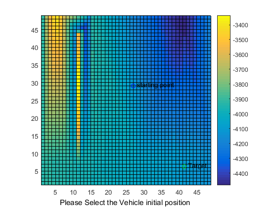
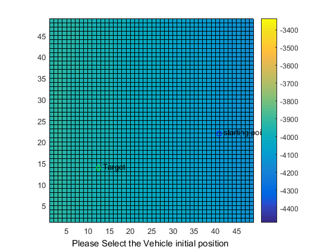
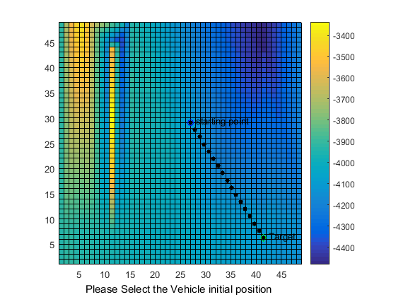
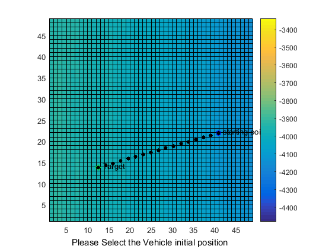
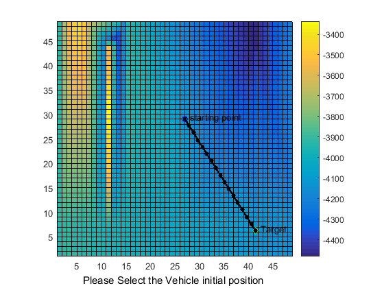
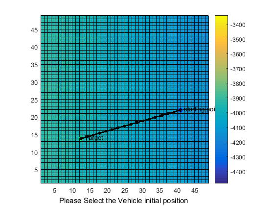
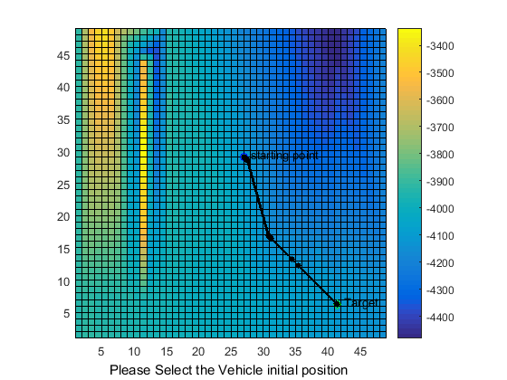
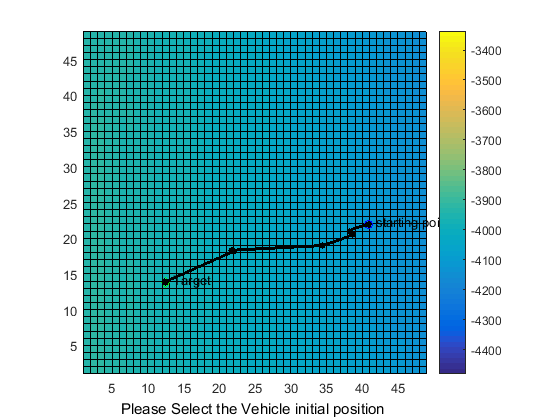

Contents
%Defining parameters for DEM file division and intial cost parameters. R1 = 0; C1 = 0; C2 = 2; R2 = 9999; %Sun parameters azimuth = 45; %azimuth elevation = 30; %elevation unit_block = 100; %unit block in cms %A standard input to fmincon solver for determing the number of points %number of interpolated points between waypoints. fineness = 101;
while(R2<12435501)
%reading a 1000 values at a time. map_triplet = csvread('E:\team indus\2016\dem.csv',R1,C1,[R1 C1 R2 C2]); num = size(map_triplet); R1 = R2; R2 = R2 + num(:,1); %for converting to easting, northing coordinates. for a = 1:num(:,1) map_triplet(a,1) = 360 + map_triplet(a,1); end F = scatteredInterpolant(map_triplet(:,1), map_triplet(:,2), map_triplet(:,3)); max_Long = max(map_triplet(:,1)); min_Long = min(map_triplet(:,1)); max_Lat = max(map_triplet(:,2)); min_Lat = min(map_triplet(:,2)); %[xq, yq] = meshgrid(min_Long:((max_Long-min_Long)/haversine(max_Long, min_Long, min_Lat, min_Lat)*unit_block):max_Long, min_Lat:((max_Lat-min_Lat)/haversine(max_Long, min_Long, min_Lat, min_Lat)*unit_block):max_Lat); x = min_Long:((max_Long-min_Long)/haversine(max_Long, min_Long, min_Lat, min_Lat)*unit_block):max_Long; y = min_Lat:((max_Lat-min_Lat)/haversine(max_Long, min_Long, min_Lat, min_Lat)*unit_block):max_Lat;
[~, MAX_X] = size(x);
[~, MAX_Y] = size(y);
%creating topography map in accordance with coordinate map.
map = ones(MAX_X, MAX_Y);
for a = 1:MAX_X
for b = 1:MAX_Y
map(a,b) = F(x(1,a), y(1,b));
coor_map(a,1) = x(1,a);
coor_map(b,2) = y(1,b);
end
end
grid on; hold on; axis equal tight pcolor(map') %begin interactive start and target pause(1); h=msgbox('Please Select the Target using the Left Mouse button'); if ishandle(h) == 1 delete(h); end xlabel('Please Select the Target using the Left Mouse button','Color','black'); but=0; while (but ~= 1) %Repeat until the Left button is not clicked [xval,yval,but]=ginput(1); end %xval=floor(xval); %yval=floor(yval); xTarget=xval;%X Coordinate of the Target yTarget=yval;%Y Coordinate of the Target %not initializing map with target location cause map should be untouched. plot(xval,yval,'gd'); %%why, 0.5? text(xval+1,yval+.5,'Target') 
Error using ginput (line 84)
Interrupted by figure deletion
Error in main (line 67)
[xval,yval,but]=ginput(1);
vehicle's initial position
pause(1);
h=msgbox('Please Select the vehicle initial position using the Left Mouse button');
uiwait(h,5);
if ishandle(h) == 1
delete(h);
end
xlabel('Please Select the Vehicle initial position ','Color','black');
but=0;
while (but ~= 1) %Repeat until the Left button is not clicked
[xval,yval,but]=ginput(1);
%xval=floor(xval);
%yval=floor(yval);
end
xStart=xval;%Starting Position
yStart=yval;%Starting Position
plot(xval,yval,'bo');
text(xval+1,yval+.5,'starting point');
  numWayPoints = 15;
xWayPoints = linspace(xStart,xTarget,numWayPoints+2)';
yWayPoints = linspace(yStart,yTarget,numWayPoints+2)';
h_wp = plot(xWayPoints,yWayPoints,'color','k','linestyle','none','marker','.','markersize',16);
  Generate a continuous path from the waypoints
PathPoints = WayPoints_To_Path([xWayPoints,yWayPoints],'linear',MAX_X,MAX_Y,fineness); h_path = plot(PathPoints(:,1),PathPoints(:,2),'k','linewidth',2); 
Calculate the cost taken
StraightLineCost = solverCost( PathPoints, map, coor_map, azimuth, xTarget, yTarget, xStart, yStart, MAX_X, MAX_Y, 'linear', fineness);
Find an optimal path using FMINCON
Define Objective Function
objectiveFun = @(P) solverCost(P,map,coor_map,azimuth,xTarget, yTarget, xStart, yStart,MAX_X, MAX_Y, 'linear', fineness); % Set optimization options opts = optimset('fmincon'); opts.Display = 'iter'; opts.Algorithm = 'active-set'; opts.MaxFunEvals = 10000; % Initial Conditions xWayPoints = linspace(xStart,xTarget,numWayPoints+2)'; yWayPoints = linspace(yStart,yTarget,numWayPoints+2)'; ic = [xWayPoints(2:end-1)'; yWayPoints(2:end-1)']; ic = ic(:); % Bounds lb = ones(size(ic(:))); ub = reshape([MAX_X*ones(1,numWayPoints); MAX_Y*ones(1,numWayPoints)],[],1); %Do the optimizaiton optimalWayPoints = fmincon(objectiveFun, ic(:), [],[],[],[],lb,ub,[],opts);
Max Line search Directional First-order
Iter F-count f(x) constraint steplength derivative optimality Procedure
0 31 6.59334 -6.673
1 63 6.53995 -6.673 0.5 -1.01 0.472
2 95 6.37104 -6.699 0.5 -0.808 1.9
3 128 6.05322 -6.754 0.25 -1.09 1.21
4 163 5.9918 -6.781 0.0625 -1.75 2.15
5 196 5.75668 -6.658 0.25 -1.62 1.48
6 230 5.697 -6.655 0.125 -1.09 1.32
7 264 5.67976 -6.617 0.125 -0.895 1.17
8 297 5.38227 -6.498 0.25 -0.966 1.58
9 329 5.29679 -6.533 0.5 -1.31 5.34
10 362 5.17647 -6.575 0.25 -1.75 2.84
11 395 5.1135 -6.537 0.25 -1.01 2.27
12 428 5.04664 -6.443 0.25 -0.641 1.44
13 459 4.91745 -6.21 1 -0.579 1.55
14 492 4.88893 -5.887 0.25 -0.488 3.61
15 526 4.83201 -5.838 0.125 -0.515 5.12
16 559 4.78637 -5.842 0.25 -0.706 6.72
17 593 4.70628 -5.879 0.125 -0.715 20.8
18 628 4.6339 -5.896 0.0625 -0.826 26.7
19 662 4.62608 -5.913 0.125 -1.08 7.26
20 698 4.61886 -5.922 0.0313 -1.2 5.44
21 731 4.48192 -5.946 0.25 -1.42 5.75
22 763 4.30615 -5.784 0.5 -1.41 3.99
23 797 4.25409 -5.763 0.125 -0.806 3.98
24 832 4.23827 -5.752 0.0625 -0.754 3.98
25 865 4.1864 -5.691 0.25 -0.637 6.74
26 900 4.18545 -5.693 0.0625 -0.79 4.78
27 934 3.97188 -5.72 0.125 -0.949 6.44
28 968 3.92175 -5.714 0.125 -0.853 7.69
29 1001 3.8526 -5.648 0.25 -1.02 12.4
30 1035 3.78778 -5.609 0.125 -1.2 9.51
31 1070 3.74593 -5.575 0.0625 -1.11 8.15
32 1103 3.74472 -5.549 0.25 -0.745 7.98
33 1138 3.68928 -5.527 0.0625 -0.898 7.95
34 1169 3.54645 -5.476 1 -0.957 7.12
35 1201 3.44595 -5.456 0.5 -2.22 8.77
36 1236 3.42916 -5.463 0.0625 -1.6 6.55
37 1268 3.35884 -5.435 0.5 -1.72 9.3
38 1299 3.30983 -5.396 1 -0.843 9.7
39 1333 3.2981 -5.391 0.125 -0.821 9.81
40 1366 3.20328 -5.391 0.25 -1.41 12.2
41 1400 3.18164 -5.399 0.125 -1.73 11.5
42 1433 3.15598 -5.407 0.25 -1.58 7.47
43 1465 3.13804 -5.405 0.5 -1.45 8.28
44 1500 3.13426 -5.403 0.0625 -1.18 9.98
45 1533 3.08935 -5.385 0.25 -0.778 10.6
46 1565 3.02841 -5.373 0.5 -0.636 9.36
47 1603 3.02598 -5.372 0.00781 -0.512 9.32
48 1635 2.96229 -5.353 0.5 -0.585 10.2
49 1668 2.94885 -5.333 0.25 -0.917 12.6
50 1700 2.91533 -5.321 0.5 -1.16 11.4
51 1734 2.91044 -5.33 0.125 -0.983 13.7
52 1767 2.89811 -5.339 0.25 -0.683 13.7
53 1801 2.89741 -5.352 0.125 -0.603 13.4
54 1834 2.85904 -5.349 0.25 -0.525 22.6
55 1869 2.85225 -5.348 0.0625 -0.668 35.1
56 1904 2.84341 -5.344 0.0625 -0.662 15.6
57 1938 2.83538 -5.332 0.125 -0.474 17.1
58 1971 2.79835 -5.308 0.25 -0.378 38
59 2009 2.79623 -5.306 0.00781 -0.341 35.6
60 2045 2.79163 -5.301 0.0313 -0.237 71.8
61 2079 2.76447 -5.272 0.125 -0.318 55
62 2114 2.75592 -5.262 0.0625 -0.302 99.9
63 2149 2.75586 -5.258 0.0625 -0.292 1.01e+03
64 2187 2.74989 -5.253 0.00781 -0.32 515
65 2223 2.7423 -5.255 0.0313 -0.368 672
66 2257 2.72783 -5.279 0.125 -0.344 164
67 2291 2.71674 -5.28 0.125 -0.249 160
68 2324 2.69691 -5.286 0.25 -0.86 126
69 2357 2.68927 -5.293 0.25 -0.645 86.9
70 2388 2.65172 -5.305 1 -0.477 67.6
71 2419 2.64556 -5.288 1 -0.238 78.6
72 2450 2.63851 -5.261 1 -0.244 93.4
73 2481 2.61187 -5.257 1 -0.343 61.9
74 2512 2.52837 -5.394 1 -0.401 27.3
75 2543 2.52105 -5.425 1 -0.144 22.9
76 2574 2.43263 -5.382 1 -0.923 25.6
77 2607 2.4252 -5.373 0.25 -0.197 26.1
78 2639 2.39263 -5.339 0.5 -0.129 26.6
79 2671 2.38107 -5.319 0.5 -0.253 27.1
80 2706 2.35402 -5.313 0.0625 -0.354 27.3
81 2746 2.35069 -5.312 0.00195 -0.607 27.4 Hessian modified
82 2781 2.3466 -5.311 0.0625 -0.252 27.2
83 2815 2.33862 -5.31 0.125 -0.141 26.7
84 2849 2.31514 -5.304 0.125 -0.462 42.1
85 2889 2.31444 -5.302 0.00195 -1.18 80.6 Hessian modified
86 2921 2.28346 -5.268 0.5 -1 42.7
87 2952 2.26979 -5.284 1 -0.721 32.9
88 2983 2.26939 -5.287 1 -0.466 31.4
89 3014 2.25538 -5.29 1 -0.45 27.2
90 3047 2.24805 -5.272 0.25 -0.3 27.8
91 3079 2.24037 -5.259 0.5 -0.233 66.8
92 3111 2.23495 -5.274 0.5 -0.301 55.1
93 3142 2.21296 -5.275 1 -0.386 68.7
94 3175 2.20848 -5.27 0.25 -0.315 35.4
95 3209 2.20729 -5.268 0.125 -0.261 27
96 3241 2.20009 -5.269 0.5 -0.204 65.1
97 3273 2.19596 -5.265 0.5 -0.224 51.3
98 3305 2.19177 -5.264 0.5 -0.228 33
99 3338 2.17372 -5.266 0.25 -0.231 70.1
100 3369 2.16705 -5.272 1 -0.229 45
101 3403 2.16281 -5.271 0.125 -0.0956 46.4
102 3434 2.1582 -5.27 1 -0.464 44.7
103 3465 2.13686 -5.267 1 -0.477 58.1
104 3498 2.12898 -5.264 0.25 -0.224 53.7
105 3532 2.12864 -5.263 0.125 -0.169 100
106 3563 2.12545 -5.26 1 -0.13 158
107 3595 2.12168 -5.259 0.5 -0.29 89
108 3627 2.11416 -5.26 0.5 -0.413 152
109 3659 2.11303 -5.268 0.5 -0.573 52.1
110 3690 2.10022 -5.264 1 -0.126 75.7
111 3721 2.09816 -5.26 1 -0.0735 66.9
112 3753 2.09248 -5.26 0.5 -0.0853 136
113 3784 2.07858 -5.27 1 -0.18 63.8
114 3815 2.04878 -5.292 1 -0.245 33.4
115 3846 2.01359 -5.298 1 -0.0806 30.3
116 3877 1.98508 -5.315 1 -0.0452 38.5
117 3908 1.92688 -5.324 1 -0.0892 34.6
118 3939 1.8935 -5.345 1 -0.0964 28.4
119 3971 1.88259 -5.339 0.5 -0.118 20.9
120 4002 1.83176 -5.338 1 -0.0699 22.5
121 4034 1.81952 -5.338 0.5 -0.137 22.7
122 4065 1.80019 -5.341 1 -0.0799 25
123 4096 1.79286 -5.342 1 -0.0581 27.7
124 4130 1.79045 -5.342 0.125 -0.203 27.6
125 4163 1.78435 -5.341 0.25 -0.116 27.8
126 4202 1.78397 -5.341 0.00391 -0.25 27.8
127 4233 1.77086 -5.34 1 -0.374 38
128 4264 1.76316 -5.341 1 -0.215 40
129 4297 1.75836 -5.341 0.25 -0.0984 38.1
130 4333 1.75499 -5.341 0.0313 -0.166 108
131 4365 1.75195 -5.34 0.5 -0.481 30.4
132 4396 1.74603 -5.34 1 -0.338 30.3
133 4429 1.74587 -5.339 0.25 -0.584 30.8
134 4462 1.7454 -5.338 0.25 -0.208 32.5
135 4493 1.74469 -5.334 1 -0.216 42
136 4524 1.74271 -5.332 1 -0.31 43.4
137 4556 1.7404 -5.331 0.5 -0.176 75.3
138 4604 1.7404 -5.331 7.63e-06 -6.75 75.7 Hessian modified
139 4637 1.73908 -5.33 0.25 -1.03 73.6
140 4671 1.73785 -5.33 0.125 -0.742 58.3
141 4705 1.73776 -5.329 0.125 -0.335 56.6
142 4738 1.73742 -5.329 0.25 -0.238 54.8
143 4783 1.73742 -5.329 -6.1e-05 -0.29 54.8
144 4828 1.73742 -5.329 -6.1e-05 -0.37 54.8 Hessian modified twice
145 4873 1.73742 -5.329 -6.1e-05 -0.278 54.8 Hessian modified twice
146 4910 1.73737 -5.329 0.0156 -0.306 54.2 Hessian modified twice
147 4958 1.73736 -5.329 7.63e-06 -1.91 54.1 Hessian modified twice
148 5003 1.73736 -5.329 -6.1e-05 -2.45 54.1 Hessian modified twice
149 5040 1.73732 -5.329 0.0156 -2.18 53.9
150 5074 1.73699 -5.329 0.125 -1.15 54.2
151 5111 1.73695 -5.329 0.0156 -0.812 54.3
152 5154 1.73693 -5.329 0.000244 -1.36 50.8 Hessian modified
153 5204 1.73693 -5.329 1.91e-06 -4.41 50.8 Hessian modified
154 5254 1.73693 -5.329 1.91e-06 -8.3 50.8 Hessian modified twice
155 5299 1.73693 -5.329 -6.1e-05 -5.83 50.8 Hessian modified twice
156 5344 1.73693 -5.329 -6.1e-05 -6.06 50.8 Hessian modified twice
157 5389 1.73692 -5.329 -6.1e-05 -5.91 50.8 Hessian modified twice
158 5434 1.73692 -5.329 -6.1e-05 -5.27 50.8 Hessian modified twice
159 5479 1.73688 -5.329 -6.1e-05 -5.28 50.7 Hessian modified twice
160 5524 1.73686 -5.329 -6.1e-05 -3.66 50.6 Hessian modified
161 5569 1.73686 -5.329 -6.1e-05 -3.89 50.6
162 5606 1.73685 -5.329 0.0156 -1.58 49.7 Hessian modified twice
163 5642 1.73684 -5.329 0.0313 -1.18 53.3
164 5675 1.73676 -5.329 0.25 -0.897 61.4
165 5707 1.73657 -5.329 0.5 -2.92 53
166 5738 1.73605 -5.329 1 -2.53 55
167 5769 1.73558 -5.329 1 -1.1 53.4 Hessian modified
168 5800 1.73509 -5.329 1 -1.23 54.1
169 5848 1.73505 -5.329 7.63e-06 -15.8 469 Hessian modified
170 5883 1.73504 -5.329 0.0625 -2.3 52.1
171 5914 1.73436 -5.329 1 -2.27 53.9
172 5945 1.7327 -5.329 1 -1.77 51.6 Hessian modified
173 5976 1.73243 -5.329 1 -2.03 51.5
174 6009 1.73174 -5.329 0.25 -3.21 52.3 Hessian modified
175 6040 1.73139 -5.329 1 -3.09 52.4
176 6074 1.7312 -5.329 0.125 -2.73 53.5 Hessian modified
177 6105 1.73035 -5.329 1 -1.25 53.6
178 6146 1.73035 -5.329 0.000977 -1.67 53.6 Hessian modified
179 6191 1.73035 -5.329 -6.1e-05 -1.2 53.6
180 6223 1.73032 -5.329 0.5 -1.36 51.7
181 6254 1.72944 -5.329 1 -3.7 59.1
182 6285 1.72911 -5.329 1 -2.41 49
183 6321 1.72902 -5.329 0.0313 -2.15 53.7 Hessian modified
184 6352 1.72834 -5.329 1 -1.75 53.8
185 6383 1.72822 -5.329 1 -3.02 53.7
186 6415 1.72818 -5.329 0.5 -2.48 51.7 Hessian modified
187 6446 1.72793 -5.329 1 -2.29 60
188 6477 1.72777 -5.329 1 -2.24 59
189 6517 1.72777 -5.329 0.00195 -3.45 59 Hessian modified
190 6565 1.72777 -5.329 7.63e-06 -5.16 59 Hessian modified twice
Local minimum possible. Constraints satisfied.
fmincon stopped because the predicted change in the objective function
is less than the selected value of the function tolerance and constraints
are satisfied to within the selected value of the constraint tolerance.
No active inequalities.
Max Line search Directional First-order
Iter F-count f(x) constraint steplength derivative optimality Procedure
0 31 32.7692 -9.892
1 62 32.7692 -9.892 1 -0.00195 0.00139
2 93 32.4036 -9.935 1 -0.00252 0.455 Hessian modified twice
3 124 30.0475 1.776e-15 1 -0.61 1.37 Hessian modified
4 155 33.8897 8.882e-16 1 -0.117 0.392
5 186 26.8481 0 1 -0.143 1.09
6 217 25.1871 0 1 -0.403 256
7 253 24.7502 -0.0402 0.0313 -68.4 3.13e+03 Hessian modified
8 287 23.9358 -6.035 0.125 -0.367 7.44
9 322 23.8628 -5.658 0.0625 -0.423 1.04
10 357 23.2172 -8.304 0.0625 -0.176 4.86
11 393 22.8194 -9.545 0.0313 -0.206 8.23
12 430 22.6528 -10.04 0.0156 -0.339 14.1
13 466 21.7144 -9.727 0.0313 -0.824 6.57
14 504 21.2656 -9.651 0.00781 -3.33 101 Hessian modified
15 540 21.219 -9.35 0.0313 -2.9 8.52
16 575 21.0149 -9.778 0.0625 -0.842 4.8
17 608 19.9722 -10.25 0.25 -0.542 13.2
18 642 19.9387 -9.145 0.125 -2.04 4.08
19 678 19.2639 -10.16 0.0313 -0.443 3.78
20 717 19.1996 -10.3 0.00391 -0.734 12.6 Hessian modified
21 748 18.8861 -10.59 1 -0.438 1.93
22 779 18.1301 -10.59 1 -1.47 3
23 811 17.781 -10.59 0.5 -1.4 1.86
24 844 17.635 -10.57 0.25 -0.602 1.76
25 875 17.3366 -10.15 1 -1.24 1.77
26 906 16.9275 -10.11 1 -1.03 1.48
27 937 16.032 -10.35 1 -1.73 1.72
28 968 15.7919 -10.58 1 -0.851 2.71
29 1002 15.7138 -10.58 0.125 -1.13 3.6
30 1034 15.1124 -10.59 0.5 -1.34 1.78
31 1071 15.086 -10.59 0.0156 -1.16 1.77
32 1104 14.788 -10.56 0.25 -1.13 1.82
33 1140 14.7615 -10.53 0.0313 -0.906 1.83
34 1172 14.6161 -10.54 0.5 -1.39 1.8
35 1203 14.4868 -10.58 1 -1.33 2.11
36 1235 14.4341 -10.58 0.5 -1.2 3.21
37 1266 14.208 -10.58 1 -1.48 4.23
38 1297 13.6449 -10.58 1 -1.68 29.6
39 1337 13.6202 -10.58 0.00195 -3.02 88.4 Hessian modified
40 1375 13.5258 -10.58 0.00781 -1.07 30.9
41 1409 13.4242 -10.58 0.125 -1.62 6.01
42 1446 13.4233 -10.58 0.0156 -1.37 6.54
43 1480 13.206 -10.58 0.125 -0.715 7.87
44 1517 13.1289 -10.58 0.0156 -1.03 12.1 Hessian modified
45 1553 13.1096 -10.58 0.0313 -0.807 11.6
46 1587 12.9872 -10.58 0.125 -1.22 27.2
47 1622 12.9547 -10.58 0.0625 -1.15 23
48 1656 12.9486 -10.58 0.125 -1.36 12.5
49 1689 12.9378 -10.58 0.25 -1.36 9.51
50 1721 12.7742 -10.58 0.5 -1.07 14.5
51 1761 12.4998 -10.58 0.00195 -1.07 49.4
52 1804 12.4326 -10.58 0.000244 -6.02 336 Hessian modified
53 1836 12.3415 -10.58 0.5 -0.752 15.5
54 1867 12.2696 -10.57 1 -0.211 19.4
55 1901 12.2599 -10.57 0.125 -0.636 33.3
56 1935 12.1214 -10.57 0.125 -1.72 16.7
57 1969 12.1189 -10.57 0.125 -2.01 20.2
58 2001 12.1094 -10.57 0.5 -0.681 17.9
59 2033 12.0998 -10.57 0.5 -0.707 23.3
60 2065 12.0879 -10.57 0.5 -0.665 25.2
61 2096 12.0538 -10.57 1 -0.293 24.5
62 2130 12.0258 -10.56 0.125 -0.288 28.3
63 2164 11.9721 -10.56 0.125 -0.439 29.9
64 2204 11.9584 -10.56 0.00195 -0.404 30.3
65 2242 11.9553 -10.56 0.00781 -0.463 30.5
66 2273 11.9095 -10.56 1 -0.383 38.3
67 2307 11.9028 -10.55 0.125 -0.299 47.6
68 2338 11.8733 -10.55 1 -0.435 64.8
69 2370 11.8574 -10.54 0.5 -0.442 91.5
70 2401 11.7896 -10.54 1 -0.677 72.6
71 2433 11.7794 -10.54 0.5 -0.599 56.5
72 2464 11.7411 -10.53 1 -0.273 82.8
73 2496 11.7074 -10.52 0.5 -0.276 105
74 2527 11.6531 -10.5 1 -0.23 260
75 2558 11.6109 -10.51 1 -1.78 66.2
76 2589 11.5855 -10.51 1 -1.02 61.5
77 2620 11.4668 -10.49 1 -0.276 59.3
78 2654 11.3719 -10.48 0.125 -0.226 102
79 2692 11.3551 -10.48 0.00781 -0.214 239
80 2726 11.3203 -10.47 0.125 -0.531 173
81 2759 11.3057 -10.47 0.25 -0.519 76.7
82 2791 11.1147 -10.45 0.5 -0.573 195
83 2825 11.0108 -10.45 0.125 -0.285 171
84 2861 10.9067 -10.44 0.0313 -0.26 162
85 2900 10.857 -10.44 0.00391 -0.268 223
86 2938 10.8272 -10.43 0.00781 -0.25 663
87 2973 10.296 -10.39 0.0625 -0.277 111
88 3008 10.0524 -10.35 0.0625 -0.247 58.7
89 3039 9.86503 -10.37 1 -1.08 58.1
90 3070 9.84012 -10.36 1 -0.421 234
91 3103 9.82792 -10.36 0.25 -1.02 73.6
92 3134 9.76381 -10.37 1 -0.253 92.6
93 3165 9.71324 -10.37 1 -0.454 190
94 3198 9.6305 -10.36 0.25 -0.36 212
95 3239 9.62905 -10.36 0.000977 -0.367 209
96 3270 9.54212 -10.36 1 -0.292 82.4
97 3301 9.41475 -10.36 1 -0.138 76.1
98 3333 9.38685 -10.36 0.5 -0.104 118
99 3365 9.35032 -10.36 0.5 -0.411 120
100 3397 9.33032 -10.36 0.5 -1.47 68.6
101 3429 9.32629 -10.36 0.5 -0.829 65.5
102 3460 9.32319 -10.36 1 -0.705 64.9
103 3492 9.30484 -10.36 0.5 -0.546 73.6
104 3525 9.29147 -10.36 0.25 -0.531 104
105 3557 9.28658 -10.36 0.5 -0.291 79.6
106 3589 9.25061 -10.36 0.5 -0.252 77.7
107 3624 9.25012 -10.36 0.0625 -0.348 75.1
108 3657 9.23755 -10.35 0.25 -0.758 78.1
109 3688 9.20108 -10.35 1 -0.588 89.3
110 3733 9.20108 -10.35 -6.1e-05 -0.63 89.3
111 3765 9.18853 -10.35 0.5 -0.222 88
112 3802 9.18316 -10.35 0.0156 -1.24 88
113 3850 9.18259 -10.35 7.63e-06 -1.2 88
114 3896 9.18227 -10.35 3.05e-05 -1.36 88 Hessian modified
115 3928 9.17447 -10.35 0.5 -1.27 85.2
116 3959 9.16386 -10.35 1 -0.837 89.3
117 3990 9.13367 -10.34 1 -0.337 88.9
118 4024 9.128 -10.34 0.125 -0.261 87
119 4057 9.12162 -10.34 0.25 -0.218 85.8
120 4091 9.11541 -10.34 0.125 -0.183 86
121 4127 9.11243 -10.34 0.0313 -0.182 137
122 4162 9.10791 -10.34 0.0625 -0.179 458
123 4198 9.10198 -10.34 0.0313 -0.277 571
124 4236 9.09857 -10.34 0.00781 -0.339 967
125 4276 9.09703 -10.34 0.00195 -0.336 1.49e+03
126 4312 9.09499 -10.34 0.0313 -0.295 1.18e+03
127 4353 9.09339 -10.34 0.000977 -0.31 1.07e+03
128 4394 9.09316 -10.34 0.000977 -1.31 1.05e+03 Hessian modified
129 4445 9.09313 -10.34 -9.54e-07 -1.32 1.05e+03
130 4493 9.09312 -10.34 7.63e-06 -1.3 1.05e+03
131 4548 9.09312 -10.34 -5.96e-08 -1.32 1.05e+03
132 4601 9.09312 -10.34 -2.38e-07 -1.31 1.05e+03
Local minimum possible. Constraints satisfied.
fmincon stopped because the predicted change in the objective function
is less than the selected value of the function tolerance and constraints
are satisfied to within the selected value of the constraint tolerance.
No active inequalities.
Plot the optimal solution:
delete([h_wp h_path]);
optimalWayPoints = [xStart yStart; reshape(optimalWayPoints,2,[])'; xTarget yTarget];
xWayPoints = optimalWayPoints(:,1);
yWayPoints = optimalWayPoints(:,2);
h_wp = plot(xWayPoints,yWayPoints,'color','k','linestyle','none','marker','.','markersize',16);
PathPoints = WayPoints_To_Path([xWayPoints,yWayPoints],'cubic',MAX_X,MAX_Y,fineness);
h_path = plot(PathPoints(:,1),PathPoints(:,2),'k','linewidth',2);
LineCost = solverCost(PathPoints, map, coor_map, azimuth,xTarget, yTarget, xStart, yStart,MAX_X, MAX_Y, 'linear', fineness);
fprintf('total Cost: %.1f\n', LineCost);
pause(2);
Warning: INTERP1(...,'CUBIC') will change in a future release. Use INTERP1(...,'PCHIP') instead. Warning: INTERP1(...,'CUBIC') will change in a future release. Use INTERP1(...,'PCHIP') instead. total Cost: 1.8
Warning: INTERP1(...,'CUBIC') will change in a future release. Use INTERP1(...,'PCHIP') instead. Warning: INTERP1(...,'CUBIC') will change in a future release. Use INTERP1(...,'PCHIP') instead. total Cost: 10.2
end